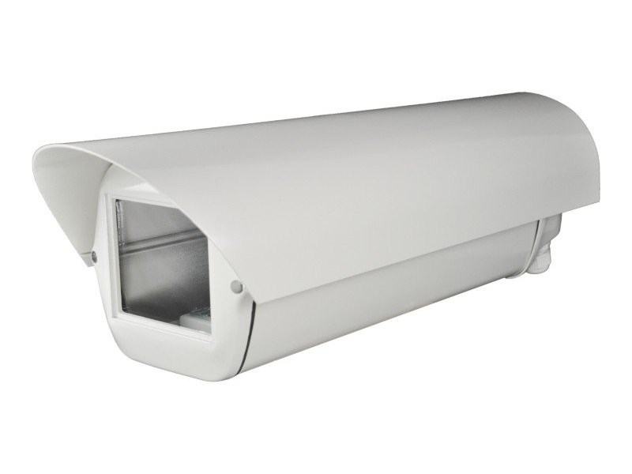
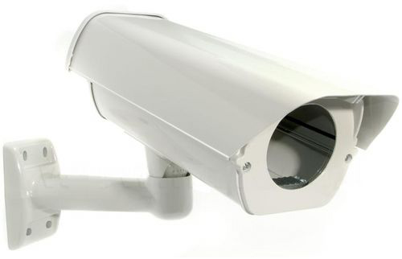

Obudowa to ważny element budowy każdej współczesnej kamery przemysłowej. To właśnie dzięki obudowie kamera może pracować w danych warunkach środowiskowych. Obudowy odgrywają kluczową rolę przede wszystkim w przypadku kamer przeznaczonych do zastosowań zewnętrznych, ponieważ to właśnie one są elementami najbardziej narażonymi na uszkodzenia. Wynika to głównie z tego, że kamery pracujące w środowisku zewnętrznym są silnie narażone na uszkodzenia mechaniczne ze strony osób obserwowanych jak i na uszkodzenia wywołane negatywnym działaniem warunków atmosferycznych.
Obudowy do kamer przemysłowych ze względu na przydatność do pracy w różnych warunkach środowiskowych podzielono na cztery klasy środowiskowe, w których kamery przemysłowe powinny pracować prawidłowo i bezawaryjnie.

Obudowa zewnętrzna aluminiowa z grzałką
Obowiązujące klasy środowiskowe:
Klasa środowiskowa I (wewnętrzna): stabilna praca w temperaturze z zakresu od 5 do 40 st. C i maksymalnej wilgotności powietrza do 75%. Urządzenia do zastosowania wewnętrznego.
Klasa środowiskowa II (wewnętrzna, ogólna): dopuszczalna temperatura otoczenia w zakresie od -10 do +40 st. C, przy wilgotności powietrza do 75%. Urządzenia instalowane w pomieszczeniach, w których występują wahania temperatury.
Klasa środowiskowa III (zewnętrzna osłonięta): dopuszczalna temperatura pracy od -25 do +50 st. C, przy wilgotności powietrza z zakresu od 85% do 95%. Urządzenia instalowane w warunkach zewnętrznych, w miejscach nie narażonych na bezpośrednie oddziaływanie warunków atmosferycznych (np. deszczu, wiatru, śniegu, słońca).
Klasa środowiskowa IV (zewnętrzna, ogólna): dedykowana dla urządzeń przeznaczonych do pracy w ekstremalnych warunkach pogodowych. Bezawaryjna i stabilna praca przy temperaturach z zakresu od -25 do +60 st. C i maksymalnej wilgotności powietrza do 95%.
Nie ma najmniejszej wątpliwości, że kamera przemysłowa to element systemu CCTV, który jest najbardziej narażony na uszkodzenie (np. akt wandalizmu, trudne warunki pogodowe). Większość dostępnych na rynku kamer przemysłowych jest standardowo przystosowana do pracy w temperaturach z zakresu od -10 do +50 st. C przy maksymalnej wilgotności powietrza poniżej 90 procent. W przypadku gdy nasze urządzenie wizyjne nie spełnia tego standardu konieczne jest zastosowanie specjalnej obudowy, która umożliwi utrzymanie warunków pracy podanych przez producenta w specyfikacji technicznej kamery.

Obudowa zewnętrzna (230V) z uchwytem przelotowym
Zgodność z normą IP
W większości przypadków obudowy do kamer CCTV posiadają informacje na temat zgodności z normą IP. Norma IPxy określa odporność obudowy na przenikanie ciał stałych (wartość "x") oraz wodoszczelność (wartość "y"). Zdecydowana większość dostępnych kamer przemysłowych wyposażona jest w obudowy o normie IP65 lub IP66 (obudowy w pełni odporne na zapylenie i częściowo zabezpieczone przed wilgotnością). Kamery przemysłowe, które pracują w środowisku o wysokiej wilgotności powietrza należy wyposażać w obudowy zgodnie z normą IP67 lub IP68 (możliwość pracy pod wodą).
Klasyfikacje obudów do kamer przemysłowych ze względu na ochronę przed dotknięciem, przed dostaniem się ciał stałych oraz przed działaniem wody, wg PN-92/E-08106:
Obudowy specjalne
Obudowy specjalne to grupa urządzeń, która pozwala kamerom przemysłowym efektywnie i bezawaryjnie pracować w ekstremalnych warunkach środowiskowych. Istnieje kilka grup obudów specjalnych. Obudowy specjalne o największej odporności stosuje się najczęściej w miejscach o podwyższonym ryzyku pożaru lub wybuchu. Ze względu na swoje właściwości techniczne obudowy specjalne są droższe od wszystkich powyżej wymienianych grup, przykładowo: obudowa chroniąca kamerę przed wybuchem jest kilkaset razy droższa od samej kamery przemysłowej. Obudowy odporne na działanie pożaru lub zapewniające ochronę przed wybuchem muszą spełniać szereg wymagających norm bezpieczeństwa.
Obudowy specjalne chroniące przed pożarem lub wybuchem to nie jedyne produkty w tej grupie. Inną grupę obudów specjalnych stanowią obudowy umożliwiające pracę kamerze przy dużym brudzie i zakurzeniu. Tego typu urządzenia najczęściej są wyposażane w wycieraczki i spryskiwacz. Kamery w tego typu obudowach najczęściej instaluje się na dużych wysokościach lub w miejscach gdzie dostęp do kamery jest utrudniony.
Ostatnią grupę stanowią obudowy odporne na akty wandalizmu, potocznie nazywane wandaloodpornymi. Ich konstrukcja najczęściej wykonana jest z materiałów odpornych na uszkodzenia mechaniczne np. z przeźroczystego poliwęglanu.
Rozmiary obudów
Obudowy do kamer przemysłowych dostępne są w różnych rozmiarach. Najmniejsze obudowy z jakimi możemy się spotkać posiadają wymiary rzędu 32x32mm (w postaci kopułki) i służą do ochrony modułów kamer płytkowych. Obudowy o małych rozmiarach ze względu na ograniczoną przestrzeń wewnętrzną nie są wyposażane w grzałki, a optymalne warunki temperaturowe zapewnia ciepło emitowane przez pracującą kamerę. W przypadku obudów do kamer o małych rozmiarach należy liczyć się z faktem, iż nagła zmiana temperatury (skroplenie się pary wodnej na obiektywie) może spowodować pogorszenie jakości obrazu.
Druga grupa obudów do kamer jest przystosowana do współpracy z kamerami o standardowym rozmiarze. Tego typu obudowy bardzo często wyposażane są w różne elementy wspomagające pracę kamery (np. reflektor podczerwieni, grzałka, wentylator, itp.) Obudowy z elementami wspomagającymi zasilane są przeważnie napięciem zmiennym 230V AC lub napięciem stałym 12V DC.
Montaż obudów
Należy pamiętać, że tylko odpowiednio zamontowana obudowa może zapewnić kamerze optymalne środowisko pracy. Ważnym czynnikiem w instalacji obudowy jest wygoda montażu. Z pozoru może wydać się, że jest to mało istotny element, jednak przy konieczności instalacji dużej ilości kamer wygoda montażu jest bardzo ważna. Producenci obudów do kamer przemysłowych wyposażają je często w udogodnienia montażowe. Do najczęściej spotykanych udogodnień należą:
- sposób otwarcia obudowy "na bok" lub "do góry" ,
- zabezpieczenie antysabotażowe (najczęściej w postaci specjalnej śruby z kluczem),
- możliwość współpracy z różnymi uchwytami montażowymi, dzięki czemu można montować kamery na ścianie, pod sufitem lub na słupie.
WAŻNE! Podczas montażu kamery przemysłowej w obudowie należy zawsze pamiętać o oddzieleniu masy obudowy od masy kamery. Warto również pamiętać o zapewnieniu wolnej przestrzeni we wnętrzu obudowy, co efekcie pozwoli na łatwe i swobodne poprowadzenie przewodów oraz montaż elementów dodatkowych (np. wentylator, grzałka, itp.).